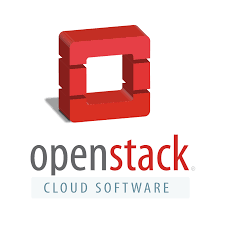
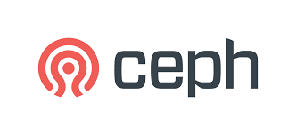
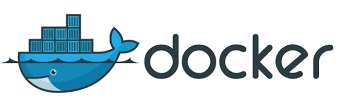
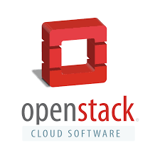
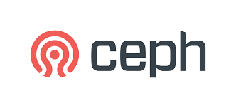
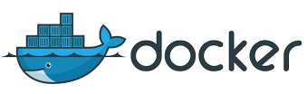

Sci-GaIA Final Event - March 2017
 University of Cape Town
University of Cape Town
- Founding Member
- Core Services
- Compute
- Block Storage
 North West University
North West University
- Founding Member
- Object Storage
 Inter-University Institute for Data Intensive Astronomy
Inter-University Institute for Data Intensive Astronomy
- Largest investor
- Initial demonstrator projects
- Governance
 University of the Western Cape
University of the Western Cape
- Technical Support
- Compute (Still Implementin)
 UCT eResearch Division
UCT eResearch Division
Software & Technologies
 





Open Source
- No licensing costs
- Encourages collaboration
Openstack
- Large community especially in eResearch
- Nectar (Australia)
- Consortium GARR
- Compute Canada
- Hardware agnostic
- Support from big vendors
Ceph
- No hardware lockin
- Massively scalable both horizontally and vertically
Galaxy
Web-based platform for data intensive biomedical research.
Progress
- Deployed on ARC
- Used for hackaton during Mozilla Science Global Sprint
- Researchers used for testing
TODO
- Roll out to greater community
- Provide support structures for "new" researchers
The Team
- Eben van Zyl (NWU)
- Ciellie jansen van Vuuren
- Dr Thomas Sanko (Eng)
- Dr Charlotte Mienie
- Peter van Heusden
- Warren Jacobus
- Timothy Carr
- Anelda van der Walt
Arcade
African Research Cloud Astronomy Demonstration Project
Overview
- First step into MeerKAT science
- Foundation for operations and collaborations
- Use cases for typical astronomy tasks
- Pathfinder for hardcore radio astronomy operations
Mission
- Develop and test end-to-end calibration and imaging pipeline
- Transform MeerKAT data into high quality scientific products
- Demonstrate preparedness and competency in dealing with large data volumes/sets on cloud based systems
- Serve as benchmark for future projects
- Provide a space for scientific and technical collaboration
- Lower the barrier to entry
Team
- Bradley Frank
- John Wu
- Stefan Coetzee
- Timothy Carr
Software Carpentry
Why bring your own stack?
Why ARC?
- Low end-user client requirements (just putty or osx terminal)
- No setup, get hacking within the first 10 minutes ;)
- Easily recoverable, even after breaking installation
- Quick scale out capability
- Users can keep on hacking afterwards (usually a few days or weeks)
- Isolated learning environments, encourages "breaking" and learning
What's Next?
- Lower end-user requirements even more... just a HTML5 browser
- Provide a local copy for users to run on their own workstation
- Add even more tools, while still trying to keep image size manageable
- Create a community to develop and taylor more tools to local requirements
Team
- Timothy Carr
- Bianca Peterson
- Dr Thomas Sanko (Eng)
- Eben van Zyl
- Ciellie jansen van Vuuren
- Anelda van der Walt
- Hacky Hour Participants